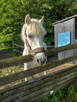
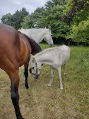
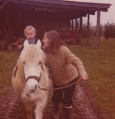
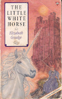
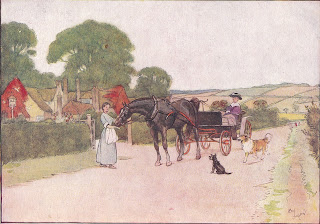

 |
| Rusty, newly arrived |
{kind=link}
My own riding days are over but we have two stables and some sheds which enable my daughter Georgeanna to base her two retired racehorses here. Rusty’s job is as a minder for Backbord, a hurdles winner at Cheltenham in his day (not with us, I hasten to add). Georgeanna was his work rider, led him up at the races and bought him for a nominal sum when his career came to an end. He’s now 23, elderly for a thoroughbred, and has recently suffered the loss of an eye.
Backbord is so devoted to his stable companion Bo (22) that it’s become impossible to separate them. Theirs is an intense relationship with a competitive edge. They canter round the field, bucking and air-kicking, jostle to be first at the feed bucket, take a swing at each other with their teeth bared. They also gaze, nibble and nicker at each other, lovingly. When Backbord was enduring weeks of eye treatment in a darkened stable, Bo was beside him throughout. But inseparability has its problems. Rusty's company should take the angst out of this situation, allowing Georgeanna and Bo to slip away for a ride, without being pursued by hysterical neighing and returning to find poor neurotic Backbord drenched in sweat and kicking hell out of his stable.
Rusty isn't white - few ponies are - he's a grey with red-brown speckles, colloquially known as 'flea-bitten'. He wasn't in good condition when he arrived so spent a couple of days alone here, while Backbord and Bo were away in a neighbour's field. This gave Georgeanna time to clean him up, worm him, begin adding supplements to his diet. We didn't know if he'd been alone before and here he was in a new place. Ponies and horses are sociable creatures. Georgeanna hung up a mirror and he stood gazing contentedly at himself.
Then we took him to meet the big boys. It was extraordinary how easily Backbord understood that Rusty had arrived as his ‘emotional support’. He nudged the small pony away from Bo and walked him round the new field, no kicking, no squealing, just a rational tour of inspection. Rusty evidently pointed out that his new status would entitle him to 50% of whatever was in Backbord’s bucket at the time. This was agreed without fuss. Soon Georgeanna and Bo were able to go out for a stress-free ride leaving Backbord and Rusty grazing contentedly.
 |
| Backbord meets Rusty |
{kind=link}
Rusty is a survivor. His immediate past was as one of a half dozen horses and ponies kept in a large field by a lady who stipulated that when she died, they should all be destroyed. The local ‘equine dispatch’ firm put three of them down without hesitation, as their condition was so poor, but then refused to go further, giving the other three a chance to find new homes, new lives. A friend of a friend took Rusty on a temporary basis, and from there he came to us. All he brought with him was a smart new headcollar and a passport, issued by the British Driving Society, stating that he’s a New Forest pony, aged 21. That’s it. We know nothing more about former life.
21 is not as old for a little white pony as it is for a hard-worked ex-racehorse. There’s every chance that Rusty will be with us for years – perhaps teaching Georgeanna’s daughter, Dolly (currently aged one) the basic joy of ponies – and a few survival skills of her own. The cry of ‘Mummeeeee!’ still echoes in my memory as I would watch Georgeanna hurtling across some enormous field, out of control on another tough little pony of the past. I could only trust that she was going to hang on tight and would eventually discover the brakes. It was a stark test of the need for a parent to let go, stop hovering and hope. Perhaps it helped me learn to hide my terror when she began racing for real.
In the sailing world a moment comes when your child wants to take their dinghy out alone. How will they manage an equipment failure? a sudden squall? But you have to take a deep breath and let them. Parents can't always be swooping alongside in a rescue RIB.
 |
| Snowy, a wise first pony for my oldest son but only on temporary loan |
{kind=link}
Rusty might also teach other small animals and humans some respect. On his second day here, before he met the big horses, he was in a small paddock on his own. Nellie, Bertie’s inquisitive and determined little dog was much intrigued. She kept following him round, sniffing at his heels, taking no notice of our calls. He stood it for a while, then turned round, laid back his ears and chased her out of his field.
You might remember Merrylegs, the dapple-grey pony in Anna Sewell’s Black Beauty (1877), describing how he dealt with a couple of boys who galloped him as if he was a machine and then began hitting and mistreating him:
"What have you been doing, Merrylegs?" I asked.
"Oh!" said he, tossing his little head, "I have only been giving those young people a lesson; they did not know when they had had enough, nor when I had had enough, so I just pitched them off backward; that was the only thing they could understand."
"What!" said I, "you threw the children off? I thought you did know better than that! Did you throw Miss Jessie or Miss Flora?"
He looked very much offended, and said, "Of course not; I would not do such a thing for the best oats that ever came into the stable; why, I am as careful of our young ladies as the master could be, and as for the little ones it is I who teach them to ride. When they seem frightened or a little unsteady on my back I go as smooth and as quiet as old pussy when she is after a bird; and when they are all right I go on again faster, you see, just to use them to it; so don't you trouble yourself preaching to me; I am the best friend and the best riding-master those children have.”
Ginger, the troubled chestnut mare, recommends a kick for cruel, thoughtless boys but Merrylegs has a better understanding of the harsh truths of a Victorian pony’s life.
"Besides," he went on, "if I took to kicking where should I be? Why, sold off in a jiffy, and no character, and I might find myself slaved about under a butcher's boy, or worked to death at some seaside place where no one cared for me, except to find out how fast I could go, or be flogged along in some cart with three or four great men in it going out for a Sunday spree, as I have often seen in the place I lived in before I came here; no," said he, shaking his head, "I hope I shall never come to that."
Ginger comes to a tragic end – directly caused by the selfish brutality of her treatment by humans. Norfolk novelist, Anna Sewell, wrote Black Beauty as an attempt to educate people to treat horses with more intelligence and kindness.
 |
| A Carnegie Medal winner A fairy tale recently re-read with delight |
{kind=link}
Like many readers I longed to make things right for Ginger, but I wouldn’t have given her to my granddaughters. Rusty’s predecessor Jasmine, who taught Georgeanna so much when she was small, arrived as a replacement for a fiery little chestnut called Popcorn, who kicked the other kids at Pony Club and frightened her small rider, so couldn't stay. Jasmine, elderly, small and white (okay, grey if you must) came from a dealer, with no known history but settled in sweetly and lived with us for more years than I remember until she died of old age in her stable. Her pretty name reminds me of Periwinkle, the 'small round fat dapple-grey pony with very short legs, a long tail and main and a merry eye' who teaches Maria to ride in Elizabeth Goudge's classic The Little White Horse (1946)
I've just been running up the road with Rusty on a lead rein and Dolly in her pram, giggling as we try to keep up with the long striding Backbord and Bo. (Dolly giggled, I didn't, I was much too short of breath.) I don’t suppose we’ll ever learn any more of Rusty’s past history. I’m just hoping that he'll turn out to be a Jasmine, a Periwinkle, a Merrylegs and he can stay here for the rest of his days.
 |
| Black Beauty's last home after a difficult equine life (illustration by Cecil Aldin from the edition given to my mother in 1933) |
{kind=link}